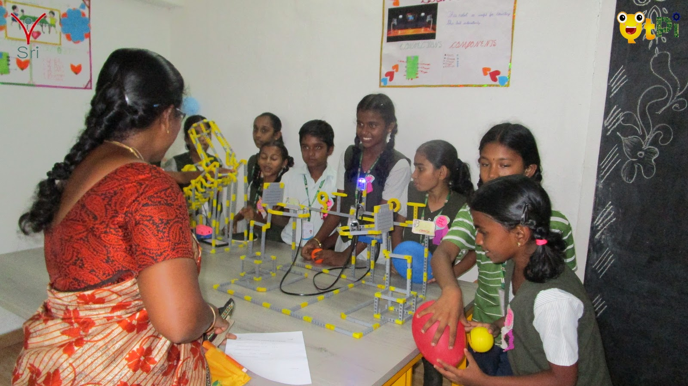

|
|


About us:
QtPi was established in 2016 and since then it has collaborated with 40+ schools, providing training in Robotics and STEAM. QtPi has achieved significant results across the schools it is collaborating with by providing not just theoretical knowledge but by providing practical and hands-on experience with the kit provided by it. In 2019 QtPi has stepped in Tamilnadu by collaborating with one of the prestigious schools, Sri National School
Objectives:
- SNS aims to lead our students into the future by developing them into students who are open and curious, skilled in critical thinking, good at teamwork, and adept at using new and current technologies.
- SNS personalized learning to meet the needs, motivations, and strengths of each student, ensuring every student graduates prepared to succeed in college, careers, and participate positively in our community's civic life.
"Education is not the filling of a pail, but the lighting of a fire."
Mission:
- To achieve the goal, faculty at SNS is singularly focused on one thing--your child. They bring their passions into the classroom and pay close attention to the social, emotional and academic needs of each individual.
- SNS follows the CBSE curriculum that reads students for challenges both in and out of the classroom. The experience is enriched by athletics, independent projects, service learning, in-depth classes, field trips, excursions, outdoor education, and guest lectures.
Vision:
- SNS vision is to lead our students into the future by developing them into students who are open and curious, skilled in critical thinking, good at teamwork, and adept at using new and current technologies.
- We personalize learning to meet the needs, motivations, and strengths of each student, ensuring every student graduates prepared to succeed in college, careers, and participate positively in our community's civic life.
- To Know about [QtPi Robotics] (https://www.qtpi.in/)
- Greeting Bot
- Agro Bot
- Fire Extinguisher
The bot will greet the guests by bringing the hand position as ‘Hi' and a voice will be played automatically by saying ‘welcome you all'. Due to this we can avoid using manpower.
Students created a structure by their own in creative manner which finally came as wonderful robot structure

Students were prepared for presenting some innovative projects to explore their ideas to their teacher and parents by exhibiting their bots in the stalls arranged.



Students of Grade 4 and Grade 5 were prepared for PTM to present their innovation in front of their teachers and parents on the PTM day with great excitement. The teachers and parents were excited a lot and appreciated the students for their wonderful presentation about their projects. It was a great day for students, teachers and parents with enthusiasm.

SNS School Grade 5 Kids Presenting the projects to parents with some new ideas on November 16, 2019
The students of Grade 5 were so excited in their parents teacher meeting to present their bot to their parents and teachers with loads of expressions in joy.
Innovative and wonderful bots like Greeting bot, Agro bot, Soccer Bot, Pick and place bot and so many are placed in the PTM.


SNS School Grade 4 Kids Presenting the projects to parents with some new ideas on November 30, 2019


|
|
|
|
|
|


Grade 1 - Pranika, Lishanth
Grade 2 - Kabilan, Hari Amuthan
Grade 3 - Vaibhavi, GG Sarvesh
Grade 4 - Nishvarth, Sai Vinesh
Grade 5 - Keerthivasan, Prasanya Arunagiri
Grade 6 - Harish ragav, Arul Prasana
Grade 7 - Sri Udhav, Sibivarshini
Grade 8 - Pritish, Smrithi
Grade 9 - Pranav, Rohith
Grade 10 - Rahul kumar, Kaviya


On the occasion of independence day, Students of Grade 1 to 9 Kids created innovative structures by using the Q-bits.


Grade 1 Students
| Grade 4 Students
|
Grade 8 Students
| Grade 7 Students
|


|
|
|